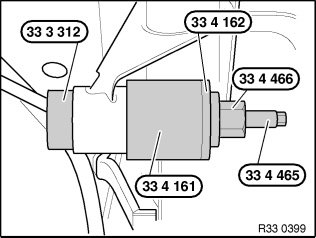
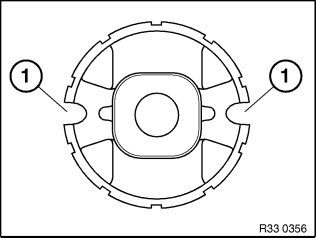
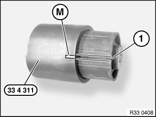
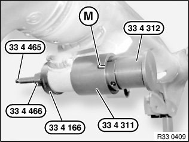

33 17 004 Replacing All Front Rubber Mounts for Rear Differential Mounting
33 17 004 Replacing all front rubber mounts for rear differential mountingSpecial tools required:
Necessary preliminary tasks:
^ Remove rear axle final drive

Withdrawing front rubber mount:
Remove front rubber mount with special tools 33 3 312, 33 4 161, 33 4 162, 33 4 466 and 33 4 465.
Note:
The milled recess of special tool 33 4 161 must point upward toward the rear axle support.

Installing front rubber mount:
Important!
Coat bearing bushing in rear axle carrier and front rubber mount with Circo light (refer to BMW Parts Service).
Front rubber mount must be aligned by way of slots (1) to vehicle transversal direction.

Insert front rubber mount in special tool 33 4 311.
Align front rubber mount so that side slots (1) line up with marking (M) on tool.

Draw in front rubber mount as far as it will go using special tools 33 4 465, 33 4 466, 33 4 166, 33 4 311 and 33 4 312.